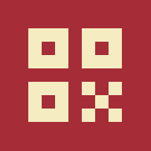

Posle Prijavite se izaberite Gmail nalog sa kojim je štab podelio tabelu gostiju.
Google pita da li stranica sme da vidi vaš mejl. Dodirnite Continue. Stranica vidi samo mejl, da se u tabeli zna ko je upisao gosta. Ako piše You're signing back in, isto Continue.
Dodirnite kvadrat Dodirnite za skeniranje i dozvolite kameru (Allow).
Usmerite kameru na QR gosta. Zeleno: upisan. Crveno: već je ušao. Dodirnite bilo gde za nastavak. Gost bez QR-a: Pretraga.
Prijavite se Gmail nalogom sa kojim je štab podelio tabelu gostiju.
Dozvolite kameru u podešavanjima pregledača. Do tada QR kod možete da slikate.